Titelbild: Bethlehemkirche in Tolkewitz, Altarraum im Advent. Foto: S. Behr
Jahreslosung 2027
Fürchte dich nicht, denn ich bin mit dir; hab keine Angst, denn ich bin dein Gott!
Jesaja 41,10
Inhalt dieser Ausgabe
Aktuelles
Vom Stall zur Kirche: 75. Kirchweihjubiläum der Bethlehemkirche
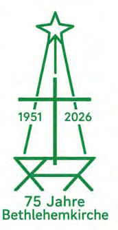
Ein Stall am Anfang – das passt zu Bethlehem. Rund dreizehn Jahre lang war ein ehemaliger Pferdestall das Zuhause der Tolkewitzer Kirchgemeinde. Nachdem 1938 Gottesdienste in der Schule nicht mehr erlaubt waren, stellte der Baumschulbesitzer Wilhelm Hauber Räume in seinem Gut an der Wehlener Straße zur Verfügung. Aus dem Stall wurde das „Kirchliche Heim“. Viel Platz bot es nicht: Mehr als sechzig Menschen ließen den Raum bereits überfüllt erscheinen. Aber hier wurde Gottesdienst gefeiert, wurden Kinder unterrichtet, traf sich die Gemeinde.
Der Wunsch nach einer eigenen Kirche blieb. Nach Krieg und Zerstörung schien seine Verwirklichung zunächst kaum denkbar. Doch Gemeindeglieder bargen und putzten Tausende Ziegel aus einer Ruine. Tolkewitzer Unternehmer halfen beim Transport, Bauholz wurde gestiftet. Aus Trümmern und viel eigener Arbeit begann eine Kirche zu wachsen.
Als am 17. Dezember 1950, dem 3. Advent, ihr Grundstein gelegt wurde, erhielt sie ihren Namen: Bethlehemkirche. Der Name schlug eine Brücke von der biblischen Geschichte zur eigenen Erfahrung. Auch in Bethlehem beginnt die Geschichte nicht in einem prächtigen Haus, sondern dort, wo eigentlich kein Platz mehr ist – in einem Stall. Und gerade dort findet Gott Raum unter den Menschen.
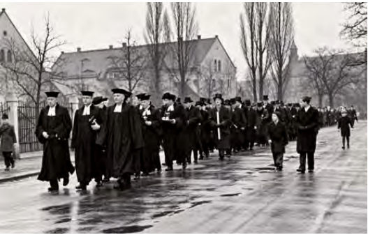
Zug der Pfarrer und Kirchvorsteher sowie vieler Gemeindeglieder vom Kirchlichen Heim im Haubergut (ehemaliger Pferdestall) zur Kirche anlässlich der Weihe der Bethlehemkirche am 3. Advent, 16. Dezember 1951
Knapp ein Jahr später, am 3. Advent, dem 16. Dezember 1951, war es so weit. Pfarrer, Kirchvorsteher und viele Gemeindeglieder zogen vom Kirchlichen Heim im Haubergut hinüber zur neuen Kirche. Unser Foto hält diesen besonderen Weg fest: vom Stall zur Kirche. Nach Jahren des Provisoriums hatte die Gemeinde endlich ein eigenes Gotteshaus.
75 Jahre später ist die Bethlehemkirche vielen Menschen ein vertrauter Ort – für Gottesdienste und Musik, für Begegnungen, Feste, Abschiede und Neuanfänge. Ihre Geschichte erinnert bis heute daran, wie wenig es manchmal braucht, damit etwas beginnen kann: Menschen, die anpacken, einander Raum geben und darauf vertrauen, dass Gott auch aus kleinen Anfängen Neues wachsen lässt.
Das 75. Kirchweihjubiläum werden wir mit einem Festwochenende gemeinsam feiern. Herzliche Einladung!
eher zufällig bin ich in eine Ausstellung geraten: ein großer Raum, viele Menschen, und mittendrin diese Bilder. Wenige nur schauten sie an. Und auch ich wäre vermutlich schnell daran vorbeigelaufen, wenn ich nicht noch Zeit gehabt hätte. Zeit, die mir noch blieb, bis der Zug einfuhr. Die Ausstellung befand sich im Hauptbahnhof Dresden, mitten unter der gläsernen Kuppel im Hauptfoyer.
Sie trägt den Titel „Du im Spiegel“. Es ist zu lesen, dass man diesen Ort bewusst gewählt hat: Ein Ort, an dem viele ankommen und kaum jemand bleibt. Es sind Schwarz-Weiß-Porträts von Menschen in einer besonderen Lebenssituation. Sie haben keine Wohnung, Menschen ohne Obdach. Sie schauen dem Betrachtenden direkt ins Gesicht. Eine ganz neue Perspektive. Wenn ich ihnen im Alltag auf der Straße begegnet wäre, wo wäre mein Blick hingegangen? In ihre Richtung? Hätte ich den Blick erwidert?
Ganz unterschiedlich sind die Ursachen, warum Menschen in eine solche Situation geraten und da ist schnell die Schublade zu und das Klischee da: „Selbst schuld“; „In Deutschland muss man nicht auf der Straße leben“; „Sorry, wohl mal falsch abgebogen auf dem Lebensweg – nicht mein Problem …“
Ich denke an die in unserem Gemeindegebiet befindliche Wohnunterkunft, in der Menschen ohne Wohnraum vorübergehend eine Bleibe finden. Wir schicken den Gemeindegliedern in diesem Haus die Kirchennachrichten. Ihre Gesichter habe ich noch nie gesehen.
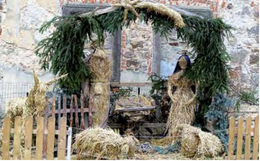
Wir alle kennen die Suche von Maria und Josef nach einem Platz in Bethlehem für ihre kleine Familie. Lange sind sie unterwegs, bis sie letztendlich wenigstens in einem Stall Unterkunft finden. Die Ausreden, warum kein Platz für sie da ist, sind vielfältig.
Und: Wie oft haben wir schon gelesen oder gehört: „Was Du einem meiner geringsten Brüder getan hast, das hast Du mir getan.“
Stunden später: Ich komme in meine gemütliche Wohnung, hier fühle ich mich Zuhause. Wie gut ich es doch habe. Die Blicke der Menschen noch in meinem Kopf, frage ich mich: Bleibe ich an dieser Stelle der Betroffenheit stehen oder bewegt es mehr in mir? Was kann ich selbst dafür tun oder können wir sogar als Gemeinde etwas bewirken, dass diese Menschen sich gesehen fühlen?
Ich wünsche uns in dieser besonderen Zeit des Beschenktwerdens und Beschenkens die Fähigkeit, Bedürftigkeit wahrzunehmen und darauf zu reagieren.
Ihre Uta Kaufmann
Gottesdienste Dezember
Monatsspruch Dezember
Kuh und Bärin werden zusammen weiden, ihre Jungen beieinanderliegen, und der Löwe wird Stroh fressen wie das Rind.
Jesaja 11,7
Nach Kirche filtern:
Sa, 5. DezemberVorabend des 2. Advents
Blasewitz Heilig-Geist-Kirche
17.00 UhrMusikalischer Advent mit Pop-up-Chor Pfarrer Reichardt
So, 6. Dezember2. Advent
Striesen Versöhnungskirche
9.30 UhrGottesdienst mit Tauferinnerung Pfarrer Dr. HerbstKindergottesdienst
So, 17. Januar · 19.00 Uhr · Gemeindesaal Sebastian-Bach-Straße 13
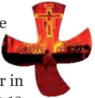
Mit Gesang, Lesung und meditativer Stille wollen wir das gemeinsame Gebet nach der Liturgie der Bruderschaft von Taizé feiern. Herzliche Einladung um 19.00 Uhr in den Gemeindesaal Sebastian-Bach-Straße 13.
Abendmahl mit Kindern 2027
Liebe Kinder, liebe Eltern, für den Abendmahlskurs für Kinder sind alle getauften Kinder der 3. Klasse herzlich eingeladen. Auch Kinder der Klassen 4 und 5, die das Angebot noch nicht wahrnehmen konnten, laden wir dazu ein. Die genauen Termine:
Fr, 22. Januar, 16.30–17.30 UhrAbendmahlskurs mit Kindern im Gemeindehaus, Seb.-Bach-Str. 13
Sa, 23. Januar, 10.00–12.00 UhrTag der Liturgie für das Erstabendmahl mit Kindern und Eltern im Gemeindehaus, Seb.-Bach-Str. 13
So, 24. Januar, 9.30 UhrGottesdienst mit Erstabendmahl in der Heilig-Geist-Kirche
Anmeldung per Link über die Website oder einfach über den folgenden Button. Bei Fragen wenden Sie sich gerne an Gemeindepädagogin Maddy Manzke.
„Du bist kostbar!“: Fahrt der Jugend zum Kirchentag 2027 in Düsseldorf
5. bis 9. Mai 2027 · Anmeldung bis 28. Februar
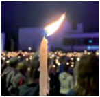
Kirchentag ist einmalig: ein buntes Glaubens-, Kultur- und Musikfestival, eine Plattform für kritische Debatten, ein einzigartiger Anlass, um Gemeinschaft zu erleben! Vom 5. bis zum 9. Mai 2027 steht der Kirchentag in Düsseldorf unter der Losung „Du bist kostbar“ (nach Jes 43,4). Sei auch du dabei!
Wir, die Evangelische Jugend Blasewitz, organisieren eine gemeinsame Fahrt für Jugendliche (ab 15 Jahren) und junge Erwachsene zum Kirchentag. Eine Anmeldung ist bis zum 28. Februar möglich. Weitere Infos findet ihr im Anmeldeformular oder bei Diakon Sebastian Holzhausen. Wir freuen uns auf einen inspirierenden Kirchentag!
AG Integration / Deutschkursdienstags 9.30–11.30 UhrSIZI Versöhnungskirche
Legende
CHZ
Chorzimmer
GMH
Gemeindehaus
GSK
Große Sakristei
LUZI
Lutherzimmer
PFH
Pfarrhaus
SAAL
Großer Saal
SIZI
Sitzungszimmer
* gefördert durch die Landeshauptstadt Dresden
** finanziert durch Steuermittel auf der Grundlage des von den Abgeordneten des Sächsischen Landtags beschlossenen Haushaltes
68. Aktion „Brot für die Welt“
Im Dorf Mbizwo in Simbabwe bauen Frauen und Männer gemeinsam Gemüse an und halten Kleintiere. Eine Partnerorganisation von Brot für die Welt unterstützt sie dabei mit Wissen über nachhaltige Landwirtschaft, Viehzucht und Wassermanagement. So können Familien ihre Ernährung sichern und ihre Lebensgrundlagen verbessern.
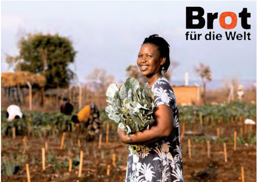
„Kraft zum Leben schöpfen“ lautet das Motto der 68. Aktion von Brot für die Welt. Im Mittelpunkt stehen Wasser, Ernährungssicherung und Klimagerechtigkeit. Wir werden uns im Advent wieder an der Hilfsaktion beteiligen. Unterstützen Sie die Aktion mit Ihrer Spende und Ihrem Gebet! Spendentüten liegen in unseren Kirchen aus. Gern leiten wir Ihre Spende an „Brot für die Welt“ weiter.
Kinderseite
Liebe Kinder, wir feiern 75 Jahre Bethlehemkirche. Das ist so alt, wie Oma und Opa sein könnten. Ich habe für euch das Logo zum Ausmalen etwas aufgepeppt. Unser kleines Kirchenmäuschen hat sich auch wieder auf dieser Seite versteckt. Findet ihr es?
Gesegnete Weihnachten und einen guten Start ins neue Jahr wünscht euch euer Stefan.
Termine im Dezember
Lebendiger Adventskalender
1. bis 23. Dezember · Striesen und Blasewitz
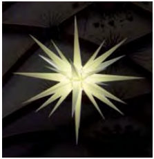
Herzliche Einladung nach Striesen und Blasewitz. Familien öffnen wieder ihre Häuser und Höfe und laden Mitbürger ein zum nachbarschaftlichen und adventlichen Beisammensein mit Musik, Glühwein, Gebäck, Geschichten und Basteleien. Beteiligt sind auch Kirchgemeinden in unserer Nachbarschaft, die katholische Gemeinde, das Bibelhaus und die Ökumenische Seniorenhilfe Dresden e.V.
Genauere Informationen zu den adressierten Kalenderterminen entnehmen Sie bitte den gelben Aushängen in den Schaukästen unserer Kirchgemeinde sowie im Internet auf unserer Homepage.
„Ankommen“. Adventsvesper mit dem Pop-Up-Chor
Sa, 5. Dezember · 17.00 Uhr · Heilig-Geist-Kirche
Am Vorabend des 2. Advents laden wir, in der mittlerweile vierten Auflage, herzlich zu einer besonderen musikalischen Adventsvesper ein, 17.00 Uhr, in die Heilig-Geist-Kirche.
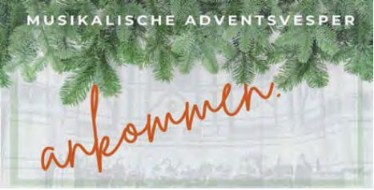
Lassen Sie sich von stimmungsvoller Musik aus Jazz, Pop und Gospel auf die Adventszeit einstimmen. Unter der Leitung von Rebecca Viertel gestalten eine Projekt-Band und der Pop-Up!-Chor den Abend. Im Anschluss sind alle zu einer stimmungsvollen Verköstigung und gemütlichem Beisammensein eingeladen.
Rebecca Viertel, Kinder- und Jugendkantorin in den Dresdner Kirchenbezirken.
Adventliche Vesper mit dem Kammerorchester
So, 6. Dezember · 17.00 Uhr · Bethlehemkirche
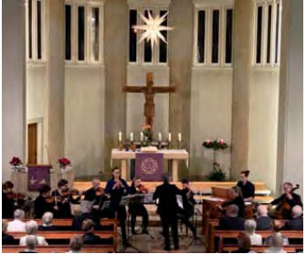
Wie in jedem Jahr am zweiten Advent laden wir 17.00 Uhr zu einer musikalischen Stunde mit Musik, adventlichen Texten und bekannten Adventsliedern in die Bethlehemkirche ein. Es erklingt u.a. das Brandenburgische Konzert Nr. 4 (BWV 1049) von Johann Sebastian Bach.
Als Solisten musizieren mit dem Kammerorchester der Kirchgemeinde: Marlon Schulz und Franca Volke, Blockflöten, sowie Nikolai Litsoukov, Violine. Den Cembalopart übernimmt Friedemann Kleinert. Der Eintritt ist frei, wir erbitten einen Unkostenbeitrag.
Advent heißt Ankunft. Adventsfeier für Seniorinnen und Senioren
Mi, 9. Dezember · 14.30–16.00 Uhr · Großer Saal, Versöhnungskirche
Liebe Menschen mit Lebenserfahrung, herzlich laden wir Sie ein zu einem besonderen Adventsnachmittag für Lebenskundige am Mittwoch, 14.30 bis 16.00 Uhr im Großen Saal des Gemeindehauses der Versöhnungskirche.
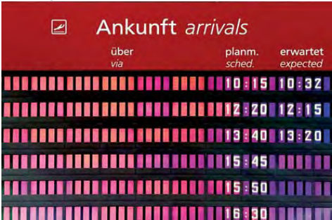
Ankunfts-Anzeigetafel auf dem Flughafen Dresden
Advent heißt Ankunft. Eine besondere Zeit beginnt: Wir warten auf Weihnachten, auf das Licht, auf die Freude – und darauf, dass Gott bei uns ankommt.
Wir laden Sie herzlich ein, diese besondere Zeit miteinander zu feiern: bei Kerzenschein, mit musikalischen Beiträgen der Seniorenkantorei und des Flötenkreises, bekannten Liedern zum Mitsingen, geistlichen Impulsen, Kaffee und Kuchen und vor allem bei guten Begegnungen. Wir freuen uns auf einen stimmungsvollen und stärkenden Nachmittag mit Ihnen!
Ihr Vorbereitungsteam des Diakoniekreises an der Versöhnungskirche und der Ökumenischen Seniorenhilfe
Adventsblasen im Schillergarten
Sa, 12. Dezember · 11.00 Uhr · Schillergarten
Eine schöne Tradition gehört seit vielen Jahren zum Advent in unserem Stadtteil: Am Sonnabendvormittag erklingen um 11 Uhr wieder adventliche Bläserklänge im Schillergarten. Bläserinnen und Bläser aus den Posaunenchören im Dresdner Osten kommen unter Leitung von Sebastian Lange zusammen, um mit bekannten Advents- und Weihnachtsliedern auf das bevorstehende Fest einzustimmen.
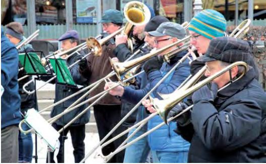
Die Tradition reicht bis ins Jahr 1967 zurück und wurde damals von Kantor Ullmann von der Bethlehemkirche ins Leben gerufen. Im vergangenen Jahr waren 26 Bläserinnen und Bläser dabei – und viele Menschen blieben stehen und hörten zu. Herzliche Einladung, auch in diesem Jahr dabei zu sein!
Festwochenende „75 Jahre Bethlehemkirche“
12. und 13. Dezember · Bethlehemkirche Tolkewitz
Vor 75 Jahren, am 3. Advent 1951, wurde die Bethlehemkirche geweiht. Dieses Jubiläum möchten wir nicht nur mit einem Festgottesdienst begehen, sondern ein ganzes Wochenende lang miteinander feiern, zurückblicken und der Geschichte von Kirche und Gemeinde in Tolkewitz nachspüren. Bereits am 2. Advent stimmt die Adventsvesper in der Bethlehemkirche auf das Jubiläum ein.
Samstag, 12. Dezember
14.00 UhrAuf den Spuren der Tolkewitzer Kirchengeschichte
Wir beginnen an der Kapelle des Johannisfriedhofs mit einem etwa einstündigen, von Martin Kaden geführten Spaziergang durch Tolkewitz. Der Weg führt zu Orten, die für die Geschichte der Gemeinde wichtig geworden sind – unter anderem zum früheren Haubergut mit dem „Kirchlichen Heim“, in dem die Tolkewitzer Gemeinde vor dem Bau der Bethlehemkirche ihr Zuhause hatte, und schließlich zur Kirche selbst.
parallel ab 14.00 UhrProgramm für Kinder
Im Gemeindehaus gibt es ein adventliches Kinderprogramm rund um Bethlehem mit Basteln und weiteren Aktionen.
ab ca. 15.00 UhrZeit für Begegnung
Anschließend treffen wir uns rund um Kirche und Gemeindehaus bei Suppe, Glühpunsch, Tee und Kaffee. Dabei gibt es viel Gelegenheit zum Wiedersehen und Erzählen. Ein kleiner Jubiläumsstand bietet unter anderem das Tolkewitz-Buch, historische Postkarten und besondere Erinnerungsstücke rund um die Bethlehemkirche an.
17.00 Uhr75 Jahre Bethlehemkirche – ein historischer Rückblick
In der Bethlehemkirche blickt Pfarrer i.R. Dr. Hans-Peter Hasse in einem Vortrag auf die Geschichte der Kirche und ihrer Gemeinde zurück. Kurze musikalische Beiträge rahmen den Vortrag.
Im Anschluss sind ehemalige Mitarbeitende, Kirchvorsteherinnen und Kirchvorsteher sowie weitere Wegbegleiter eingeladen, ihre Erinnerungen beizusteuern. Bei einem Glas Sekt wollen wir miteinander ins Gespräch kommen und Geschichten aus 75 Jahren Bethlehemkirche teilen.
Sonntag, 13. Dezember – 3. Advent
9.30 UhrFestgottesdienst „75 Jahre Bethlehemkirche“
Den Höhepunkt des Jubiläums bildet der Festgottesdienst am Sonntagmorgen. Die Festpredigt hält Superintendent Christian Behr. Auch musikalisch wird es festlich: Die Bläser rund um Matthias Ullmann rahmen festlich den Gottesdienst, die Seniorenkantorei musiziert unter Leitung von Kantorin Margret Leidenberger Johann Sebastian Bachs Kantate „Nun komm, der Heiden Heiland“ (BWV 62).
Im AnschlussGemeinsam weiterfeiern
Nach dem Gottesdienst sind alle herzlich zu einem erweiterten Kirchenkaffee im und am Gemeindehaus eingeladen. Feiern Sie mit uns 75 Jahre Bethlehemkirche – und bringen Sie gern auch Ihre eigenen Erinnerungen an diesen besonderen Ort mit!
Festliche Bläsermusik zum Advent
So, 13. Dezember · 17.00 Uhr · Versöhnungskirche
Der Posaunenchor nimmt uns in diesem Jahr mit auf eine adventliche Reise durch die Bläserliteratur.
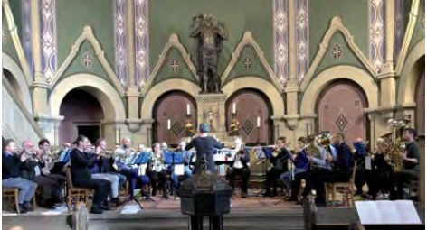
Von wunderschönen Doppelchören der Renaissance bis zu poppigen Vertonungen altbekannter Adventslieder ist alles dabei. Lassen Sie sich 17.00 Uhr in die Versöhnungskirche zum Zuhören und Mitsingen einladen. Der Eintritt ist frei, der Erlös ist für die Aktion „Wohltemperiert“ in der Versöhnungskirche bestimmt.
Silvesterkonzert
Donnerstag, 31. Dezember 2026 17 Uhr Versöhnungskirche
Silvesterkonzert
Georg Friedrich Händel: „Messiah“
Oratorium für Soli, Chor und Orchester
Irina Maria Antesberger, Sopran
Justina Vaitkute, Alt
Oliver Chubb, Tenor
Willy Wagner, Bass
Sinfonietta Dresden
Kantorei
Leitung: Margret Leidenberger
Karten zu 25 €, ermäßigt 20 €, Studierende und Azubis 12 € im Pfarramt und in der Schillergalerie
Termine im Januar
„Und die Hirten kehrten wieder um …“ Lange Nacht der Krippenspiele
Sa, 9. Januar · 13.00 bis ca. 21.00 Uhr · Versöhnungskirche
Kaum ist der Heilige Abend vorbei, sind die liebevoll einstudierten Krippenspiele oft schon wieder verschwunden – nach nur einer einzigen Aufführung. Dabei steckt in jedem Hirten, jedem Engel und jedem Weisen auf dem Weg nach Bethlehem so viel mehr! Die Evangelische Jugend in Sachsen lädt deshalb auch 2027 wieder zur beliebten „Langen Nacht der Krippenspiele“ ein – dem großen Krippenspieltreffen für ganz Sachsen.
Ob nachdenklich oder witzig, ganz traditionell oder frech modern erzählt: An diesem Tag zeigen Krippenspielgruppen aus vielen sächsischen Gemeinden noch einmal ihre ganz eigene Version der Weihnachtsgeschichte – für ein Publikum, das genau hinschaut und mitfühlt. Nach jeder Aufführung kommen Spielerinnen und Spieler, Publikum und eine fachkundige Jury miteinander ins Gespräch: Was hat berührt? Was ließe sich noch verbessern? Wertschätzend und kritisch zugleich.
Zwei Anerkennungspreise werden vergeben, der Publikums- und der Jurypreis. Gewinner wird an diesem Tag aber jeder sein – im Mittelpunkt steht das gemeinsame Erleben. Jede Gruppe ist mit ihrer eigenen Art, die Weihnachtsgeschichte zu erzählen, herzlich willkommen.
Wer zuschauen möchte, ist eingeladen!
Kirche hier und jetzt. Ein Workshop für junge Erwachsene
Sa, 9. Januar · Gemeindehaus der Bethlehemkirche · Anmeldung bis 4. Januar
Wie muss Gemeinde sein, damit ich in ihr mit meinem komplexen und fordernden Alltag einen Platz finde? Wie erfahre ich hier Stärkung für meinen Glauben inmitten meiner Lebenswelt? Wie gelingt es, dass ich mich einbringen kann und meine Gaben dabei eine entscheidende Rolle spielen? Und wie gewinnt Kirche an Strahlkraft für die Menschen in meiner Stadt, mit denen ich verbunden bin?
Diese Fragen werden uns in einem Workshop für junge Erwachsene am 9. Januar im Gemeindehaus der Bethlehemkirche beschäftigen. An diesem Samstag nehmen wir bewusst eine Altersgruppe in den Blick, die wir als Gemeinde oft übersehen. Es geht darum, gemeinsam zu überlegen, wie Kirche sein müsste, damit sie für junge Erwachsene relevant in ihrem Leben ist. Unser Ziel ist, dass wir ein konkretes Format für unseren jungen Erwachsenenkreis entwickeln, das (hin und wieder) angewendet werden kann.
Du hast Interesse? Wir freuen uns, wenn du dich einbringst und mitgestaltest! Melde dich gern bis zum 04. Januar 2027 bei Vikar Arthur Händel zum Workshop an (arthur.haendel@evlks.de oder über den Anmeldelink) – das hilft uns bei der Planung. Eine spontane Teilnahme ist aber auch möglich. Der Workshop ist kostenfrei.
Segnungsgottesdienst „Ich will dich segnen – und du sollst ein Segen sein.“
So, 10. Januar · 18.00 Uhr · Heilig-Geist-Kirche
Herzliche Einladung zu einem besonderen Abendgottesdienst mit Segnung aller ehrenamtlichen Mitarbeiterinnen und Mitarbeiter unserer Kirchgemeinde am Sonntag um 18.00 Uhr in der Heilig-Geist-Kirche. Viele Menschen sind ehrenamtlich in unserer Gemeinde unterwegs. Sie hören zu, denken und gestalten mit, packen an, sind einfach da – oft ganz selbstverständlich und manchmal ohne großes Dankeschön.
Wir wollen innehalten, zur Ruhe kommen und gemeinsam feiern. Wir wollen Gott danken für alles, was durch Ihr Engagement wächst und lebendig wird. Und wir möchten miteinander unter dem Zuspruch ins neue Jahr gehen: „Ich will dich segnen – und du sollst ein Segen sein.“ Im Gottesdienst besteht die Möglichkeit, sich ganz persönlich segnen und stärken zu lassen – für das, was vor Ihnen liegt, für Ihre Aufgaben und für Ihren eigenen Lebensweg.
Musikalisch gestaltet unsere Gemeindeband nomeso den Abend und lässt Lieder erklingen, die in diese nachweihnachtliche Zeit und an den Beginn eines neuen Jahres gehören. Kommen Sie, so wie Sie sind – mit dem, was Sie bewegt, mit Ihrer Freude und vielleicht auch mit dem, was gerade schwer ist. Wir freuen uns auf Sie!
Ihr AK Ehrenamt
Komm und sieh! „Zwischen den Zeilen lesen“
Mi, 20. Januar · 19.30 Uhr · Gemeindesaal Sebastian-Bach-Str. 13
Seit vier Jahren lesen und erkunden wir in der Reihe „Zwischen den Zeilen lesen …“ auf kreative Weise biblische, religiöse und philosophische Texte. Nach „Zeit und Ewigkeit“, den Psalmen und den Gleichnissen Jesu führt uns die Reihe 2027 durch das Johannesevangelium. „Komm und sieh!“ – Entdeckungen im Johannesevangelium lautet das Jahresthema.
Ein altes jüdisches Bild beschreibt die Tora als schwarzes Feuer auf weißem Feuer: Die Buchstaben als „schwarzes Feuer“ bilden den sichtbaren Text, das „weiße Feuer“ den Raum „dazwischen“ für das Verborgene, das Noch-nicht-Gedachte und die Leerstellen des Textes. Gerade das Johannesevangelium lädt zu solchem Lesen ein. Seine Sprache ist voller Bilder, Andeutungen und überraschender Perspektiven. Gemeinsam wollen wir ausgewählten Texten nachspüren und entdecken, was zwischen den Zeilen für uns sichtbar wird.
Mittwoch, 20. JanuarJoh 1,1–18 – „Im Anfang war das Wort“
Mittwoch, 28. AprilJoh 3,1–10 – Nikodemus bei Nacht
Mittwoch, 1. SeptemberJoh 4,5–26 – Am Brunnen
Mittwoch, 3. NovemberJoh 20,11–18 – „Maria!“
Jeweils 19.30 Uhr im Gemeindesaal, Sebastian-Bach-Str. 13. Herzliche Einladung!
Antje Gumsch und Christoph Herbst
Dem Drachen ins Gesicht schauen. Ökumenische Bibelwoche
25. bis 28. Januar · jeweils 19.30 Uhr · Gemeindehaus Sebastian-Bach-Str. 13
Ein „Buch mit sieben Siegeln“ – diese sprichwörtliche Redewendung stammt aus der Offenbarung des Johannes. Vielen erscheint dieses letzte Buch der Bibel tatsächlich rätselhaft und fremd: Drachen, Tiere, geheimnisvolle Zahlen und gewaltige Bilder begegnen uns darin.
Doch die Offenbarung will nicht Angst machen. Sie ist ein Buch der Hoffnung. Sie schaut den Mächten von Angst, Gewalt und Unrecht ins Gesicht und erzählt zugleich davon, dass sie nicht das letzte Wort behalten. Am Ende steht die große Verheißung Gottes: „Siehe, ich mache alles neu.“ Unter dem Leitwort „Dem Drachen ins Gesicht schauen“ wollen wir an vier Abenden ausgewählte Texte entdecken und miteinander ins Gespräch kommen, jeweils 19.30 Uhr im Gemeindehaus Sebastian-Bach-Str. 13. Herzliche Einladung!
Montag, 25. JanuarOffenbarung 1,1–3 – Der Vorhang geht auf
Dienstag, 26. JanuarOffenbarung 7,1–17 – Gott kennt die Seinen
Mittwoch, 27. JanuarOffenbarung 12 – Dem Drachen ins Gesicht schauen
Donnerstag, 28. JanuarOffenbarung 21,1–8 – Siehe, ich mache alles neu
Probenwochenende des Jugendchors in Rosenthal
29. bis 31. Januar · Rosenthal, Sächsische Schweiz
Es ist schon eine kleine Tradition, dass der Jugendchor im Winter zu einem Probenwochenende aufbricht und ein Konzert vorbereitet. Wir fahren wieder nach Rosenthal in die Sächsische Schweiz. Du kannst gerne mitfahren, wenn du Lust auf viel Musik und gute Gemeinschaft hast. Wir proben wieder das Musical „Eleasar“ von Gerd-Peter Münden und Sätze aus der Missa 4 you(th) von Tjark Baumann. Näheres bei Kantorin Leidenberger.
Familienkirche im neuen Jahr
So, 31. Januar · 10.30 Uhr · Großer Saal, Versöhnungskirche
Herzliche Einladung zur ersten Familienkirche im neuen Jahr! Wir treffen uns 10.30 Uhr im großen Saal der Versöhnungskirche. In diesem Jahr dreht sich alles um das Thema Wasser. Wieso kommt Wasser in der Bibel so oft vor? Welche Geschichten gibt es überhaupt mit Wasser? Gibt es Wasser, das heilen kann? All diesen Fragen wollen wir uns widmen, und im Januar wollen wir uns dafür an einen ganz besonderen Teich begeben …
Im Anschluss an den kurzen Gottesdienst essen wir zu Mittag und genießen die Gemeinschaft. Wer dafür etwas Kleines wie Nachtisch oder Salat mitbringen möchte, ist herzlich eingeladen das zu tun.
Bei Fragen, oder falls du die Familienkirche sogar mitgestalten möchtest, wende dich gerne an Gemeindepädagogin Maddy Manzke.
Vorschau
Exerzitien im Alltag in der Passionszeit
Infoabend: Mo, 1. Februar 2027 · 19.30 Uhr · Versöhnungskirche
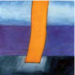
Andreas Felgner, Vater Unser IV, Aquarell, 2004
Die ökumenischen Exerzitien finden erneut in Dresden und auch in vielen anderen evangelischen und katholischen Kirchgemeinden in Sachsen statt. Jeden Tag einmal innehalten, mein alltägliches Tun unterbrechen, mich Gott zuwenden – so wie beim Tischgebet, beim Lesen der Herrnhuter Losung, beim abendlichen Singen am Bett der Kinder …
Exerzitien im Alltag ist eine weitere Möglichkeit in Aufmerksamkeit mit Gott zu leben. In der Stille und im Gebet lausche ich, was Gott für mich bereithält. Der Exerzitienweg ist ein gemeinsamer Weg. Bei wöchentlichen Treffen mit anderen Teilnehmern und Teilnehmerinnen können Erfahrungen geteilt werden und es gibt Anregungen für die persönliche Gebetszeit zu Hause. Sind Sie neugierig geworden und haben Lust, teilzunehmen?
Am Montag, 1. Februar 2027, 19.30 Uhr laden wir zu einem Informationsabend in die Versöhnungskirche ein. Näheres ab Mitte Dezember in den ausliegenden Flyern und auf unserer Internetseite.
Herzlich grüßen Ulrike Bauer, geistliche Begleiterin und Pfarrerin Anke Arnold
Nordisches Chorkonzert „ÄNNU“ mit anima nordica
Sa, 6. Februar · 19.00 Uhr · Bethlehemkirche
anima nordica ist zurück, mit einer Weiterentwicklung unseres nordischen Chorprogramms „KVAR“. In „ÄNNU“ (= immer noch) sinnieren wir über das, was wir haben, über Ressourcen und Erfahrungen, die uns weitertragen in einer veränderlichen Welt. Und auch wir selbst erfüllen uns lang gehegte Repertoireträume mit Jaakko Mäntyjärvis Meisterwerk „Canticum Calamitatis Maritimae“. Varmt välkomna! 19.00 Uhr Bethlehemkirche.
Wie immer ist der Eintritt frei. Stattdessen sammeln wir Spenden. www.animanordica.de
Ökumenische Kinderbibeltage 2027
18. bis 21. Februar (Winterferien) · Abschluss So, 11 Uhr, Versöhnungskirche
Liebe Kinder, herzlich laden wir euch zu den Kinderbibeltagen in den Winterferien ein! Kommt mit uns auf eine spannende Reise in die Tiefen der Bibel, auf der wir spannende Personen und aufregende Geschichten kennenlernen wollen. Mit ganz viel Spaß, Musik und Spiel werden wir gemeinsam Göttliches erkunden und Gemeinschaft feiern. Außerdem wollen wir uns selbst an einen Gottesdienst trauen, ihn also planen, gestalten und durchführen. Hier könnt ihr mal einen richtig eigenen Gottesdienst machen!
Wann und wo? Vom 18. bis 21.02., mit Abschlussgottesdienst am Sonntag, 11 Uhr in der Versöhnungskirche. Anmelden könnt ihr euch auf unserer Website oder über den Anmeldelink. Fragen gerne direkt an Gemeindepädagogin Maddy Manzke. Wir freuen uns auf euch!
Die Kinderbibeltage sind ein ökumenisches Projekt mit der katholischen und der methodistischen Gemeinde in Striesen sowie den Ev.-Luth. Kirchgemeinden Dresden-Ost und Gruna-Seidnitz.
Forum Gemeinde
Striesener Friedhof: Änderung in der Trägerschaft
Der Striesener Friedhof ist für viele Menschen ein besonderer Ort: Sie besuchen die Gräber ihrer Angehörigen, finden Raum für Trauer und erleben auch, wie gut Ruhe und Natur tun können. Dass der Friedhof so einladend und gepflegt ist, verdanken wir besonders den engagierten Mitarbeiterinnen und Mitarbeitern. Mit großer Erfahrung begleiten sie Trauernde, beraten Angehörige und sorgen dafür, dass der Friedhof seiner besonderen Aufgabe gerecht wird. Dafür sind wir sehr dankbar.
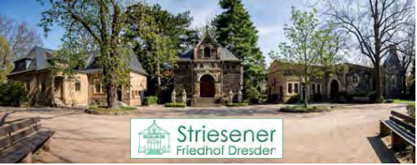
Zum 1. Januar 2027 verändert sich die Trägerschaft. Bisher wird der Friedhof gemeinsam von den Kirchgemeinden Johannes-Kreuz-Lukas und Dresden-Blasewitz getragen. Künftig übernimmt unsere Kirchgemeinde Dresden-Blasewitz die alleinige Trägerschaft. Die bewährte Arbeit vor Ort wird verlässlich fortgeführt; die Mitarbeiterschaft bleibt den Menschen als vertraute Ansprechpartnerin erhalten.
Mit dem Trägerwechsel werden auch einige organisatorische Abläufe neu geordnet. So wollen wir tragfähige Strukturen schaffen und den Friedhof wirtschaftlich wie organisatorisch stabil in die Zukunft führen.
Wir übernehmen diese Aufgabe mit Respekt vor dem Gewachsenen und großer Wertschätzung für alle, die den Friedhof geprägt haben. Unser Striesener Friedhof soll auch künftig ein würdiger Ort der Bestattung, lebendiger Erinnerung und christlicher Hoffnung sein.
Unser neuer Kirchenvorstand
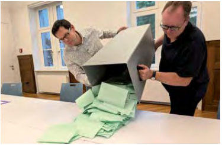
Der Wahlvorstand bei der Auszählung der Stimmen am 13. September 2026.
Nach der Kirchenvorstandswahl am 13. September 2026 und der Berufung weiterer Mitglieder steht die Zusammensetzung unseres neuen Kirchenvorstandes fest.
Gewählt wurden
Antje Gumsch (56)Schulreferentin
Frieder Hartmann (38)Buchbinder
Anne Kruck (61)Sozialarbeiterin
Mirjam Lehmann (48)Schulleiterin
Maddy Manzke (24)Gemeindepädagogin
Mirja Quarz (18)FSJlerin an der Staatsoperette Dresden
Claudia Siegel (49)Bilanzbuchhalterin
Susanne Starke (57)Innenarchitektin
Matthias Walther (67)Gärtner
Christoph Zibell (60)Diplom-Kaufmann
Berufen wurden
Thomas Anders (48)Krankenhausmanager
Clara Schneider (16)Schülerin am Ev. Kreuzgymnasium
Julian Snethlage (49)Architekt
Bianca Weihnacht (52)Physikerin
Außerdem gehören die Pfarrerinnen und Pfarrer unserer Kirchgemeinde dem Kirchenvorstand an.
Am 1. Advent, dem 29. November 2026, wird der neue Kirchenvorstand im Gottesdienst um 9.30 Uhr in der Heilig-Geist-Kirche in seinen Dienst eingeführt. Für sechs Jahre wird er Verantwortung für unsere Kirchgemeinde übernehmen und ihre Entwicklung mitgestalten.
Allen Kirchenvorsteherinnen und Kirchenvorstehern wünschen wir für ihre Arbeit Freude, Kraft, gute gemeinsame Entscheidungen und Gottes Segen. Zugleich danken wir den Mitgliedern des bisherigen Kirchenvorstandes sehr herzlich für ihr Engagement in den vergangenen sechs Jahren.
Empfehlungen aus dem Begegnungszentrum der Ökumenischen Seniorenhilfe Dresden e.V.
Sterne basteln
Mi, 9.12. · 14.00–15.30 Uhr · Anmeldung bis 7. Dezember
„Weiße Igelsterne“ aus Filtertütenpapier, Vorkenntnisse sind nicht erforderlich, Materialien werden bereitgestellt.
Weihnachtscafé
Mi, 23.12. · 14.30–16.00 Uhr · Anmeldung bis 21. Dezember
Unter „In Gemeinschaft ist man weniger allein“ laden wir zu Kaffee, Stollen und weihnachtlichen Köstlichkeiten ein. Frau Reimann gestaltet den Nachmittag mit Gedichten und Liedern.
Angehörigengruppe Demenz
jeden ersten Mittwoch im Monat · 14.00–15.30 Uhr
Wer einen Menschen mit Demenz begleitet oder pflegt, findet hier Raum für Austausch, Informationen und gegenseitige Unterstützung. Die Gruppe trifft sich jeweils am ersten Mittwoch im Monat von 14.00 bis 15.30 Uhr bei Kaffee und Kuchen und wird von einer Sozialarbeiterin begleitet.
Alle Angebote finden im Begegnungs- und Beratungszentrum im Erdgeschoss des Seidnitz Centers statt.
Adventskalender 2026 – Türchen öffnen und „Wohltemperiert“ unterstützen
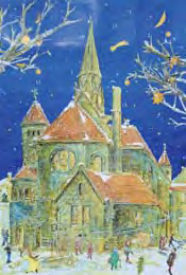
Auch in diesem Jahr gibt es wieder unseren Adventskalender für die Versöhnungskirche. Hinter seinen 24 Fenstern wartet Tag für Tag ein kleines adventliches Motiv. Der Kalender ist im Pfarramt für 10 € erhältlich. Der Erlös kommt unserer Aktion „Wohltemperiert“ und damit der Erneuerung der Heizungsanlagen zugute. So verbindet sich die Vorfreude auf Weihnachten mit einer ganz konkreten Unterstützung für unsere Kirche. Herzliche Einladung zum Mitmachen!
„Wohltemperiert“ – wir bleiben dran
Unsere Aktion „Wohltemperiert“ zur Erneuerung der Heizung in der Versöhnungskirche geht weiter – auch wenn sich der Beginn der Baumaßnahme leider verzögert. Grund dafür ist das vom Landeskirchenamt verhängte Bau-Moratorium. Erst wenn kirchliche Baumaßnahmen wieder möglich sind, können auch wir mit der Umsetzung beginnen.
Rund 30.000 € sind bis zum 1. Oktober bereits zusammengekommen.
Dankbar blicken wir auf die ersten Aktionen in der Gemeinde zurück und vor allem auf die große Unterstützung vieler Menschen. Herzlichen Dank allen, die sich beteiligen, Ideen einbringen und unsere Aktion unterstützen!
Wir bleiben dran – für eine wohltemperierte Versöhnungskirche.
Rückblick auf unser Gemeindefest „20 Jahre Kirchgemeinde“
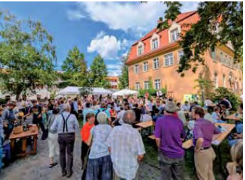
Wir haben alle zusammen Gemeindejubiläum gefeiert und das nicht ohne Grund, denn vor 20 Jahren haben sich die drei Kirchgemeinden zu einer großen Gemeinde zusammengeschlossen. Nach dem Gottesdienst um 11 Uhr gab es viele großartige Angebote für Kinder und Erwachsene, wie zum Beispiel: Kinderschminken, ein Instrumentenkarussell, Kennenlern-Bingo, Glitzertattoos und vieles mehr.
Es gab auch Programm: die Kurrende sang von den Elementen, Senior*innen führten ein selbstgeschriebenes Kabarett auf mit Humor über unsere Landeskirche und die AG Wohltemperiert veranstaltete Auktionen. Damit allerdings bei dieser grandiosen Veranstaltung niemand hungern musste, gab es Gegrilltes, Waffeln, Kaffee und Kuchen, Zuckerwatte, süße Getränke und Wasser. Ich konnte leider gar nicht alles aufzählen, weil einfach so viel los war. Von daher würde ich Ihnen nahelegen, dass Sie, wenn die Kirchgemeinde 50 wird, auch wieder dabei sind.
Friedrich (Teamer & Mitglied im AK Ehrenamt)
Anmerkung der Redaktion: Ein Termin für eine Neuauflage des Gemeindefestes, zu dem uns sehr viele positive Reaktionen erreicht haben, steht noch nicht fest. Es gibt Überlegungen für ein nächstes Fest in zwei Jahren.
Fünf Fragen an Ehrenamtliche: Eberhard Breithaupt
Vorsitzender des Fördervereins Versöhnungskirche Dresden-Striesen e.V.
Wir setzen hier die neue Serie fort, die Ehrenamtliche unserer Kirchgemeinde in kleinen Interviews mit fünf Fragen vorstellt.
1. Beschreibe deine ehrenamtliche Tätigkeit in fünf Worten!
Ich versuche, Gebäude zu erhalten.
2. Warum machst du das und was hast du davon?
Die Geschichte des Gebäudeensembles von Versöhnungskirche und Gemeindehaus interessiert mich sehr. Die Statue des „Guten Hirten“ in der Versöhnungskirche z. B. ist einzigartig – ich habe etwas Vergleichbares noch in keiner anderen Kirche gesehen! Das Motto „Lasset euch versöhnen mit Gott!“ ist an vielen Stellen in der Versöhnungskirche künstlerisch umgesetzt worden. Durch unsere Vereinsaktivitäten – z. B. am „Tag des offenen Denkmals“ – kommen wir mit vielen Menschen in Kontakt, die sich für diese Gebäude interessieren. Aber auch diese Besucher erzählen uns oft interessante Geschichten. Und wenn sie sich über einen Kaffee oder eine Fettbemme an unserem Imbissstand freuen, freue ich mich auch!
3. Inwiefern ist deine Tätigkeit wichtig für die ganze Gemeinde?
Die Aktivitäten unseres Vereins sorgen z. B. dafür, dass die „Konfirmationskirche“ in Schuss bleibt und dort wichtige und schöne Veranstaltungen für viele Menschen wie Gottesdienste, Konzerte und Gemeindeversammlungen stattfinden können. Unsere finanzielle Unterstützung der Gemeinde erhöht deren Eigenanteil, der bei vielen staatlich geförderten Baumaßnahmen überhaupt die Voraussetzung dafür ist, dass staatliche Zuschüsse ausgezahlt werden. In den 28 Jahren seines Bestehens hat der Verein die Gemeinde mit über 123.000 € unterstützen können.
4. Welche Herausforderungen siehst du in deinem Tätigkeitsfeld?
Es ist nicht immer leicht, Menschen für ein „Investment in tote Steine“ und für die Mitgliedschaft im Verein oder die Mitarbeit im Vorstand zu gewinnen. Wir haben kaum jüngere Menschen in unseren Reihen. Wie in vielen anderen Vereinen spüren auch wir, dass die Bereitschaft für verbindliches und längerfristiges Engagement nachlässt.
5. Erzähle von einer lustigen, kuriosen oder herzerwärmenden Situation!
An einem „Tag des offenen Denkmals“ erzählte uns eine Besucherin, dass ihr 15jähriger Sohn ganz begeistert sei von Kirchenglocken und Kirchtürmen. Und dass sie wegen dieser Leidenschaft an Wochenenden mit ihm umherfahre, um Orte zu besuchen, an denen Kirchenglocken besichtigt werden könnten.
Vielen Dank, Eberhard, für diesen Einblick!
Sie kennen eine Person aus der Gemeinde, die sich und ihr Ehrenamt vorstellen sollte? Dann schreiben Sie Ihre Empfehlung bitte an Gemeindepädagogin Henriette Henßchen.
Herr, wir bitten dich …
Aus Gründen des Datenschutzes wird der Text auf dieser Seite der Kirchennachrichten in der Online-Version nicht veröffentlicht. Wir bitten um Ihr Verständnis.